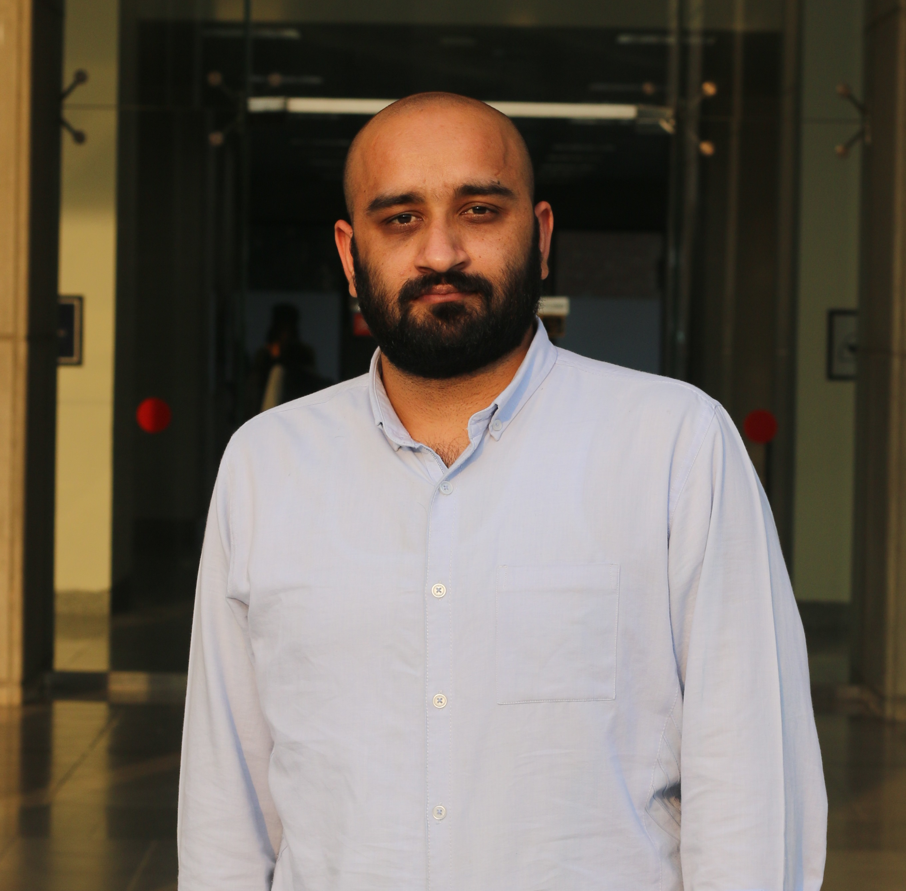

|
Muhammad Nabeel Tahir I am a Ph.D. candidate at RUTGERS University. I am currently working at LIMPH @ RUTGERS under the supervision of Dr. Umer Hassan. My research focuses on the integration of modern technologies (ML/DL), Signal Processing, and microfabrication to develop microfluidic biosensors and point-of-care devices to diagnose infectious diseases and monitor the immune system. |
 |
{kind=link}
Research. Some papers are highlighted. |

|
Blind Date: Using Proper Motions to Determine the Ages of Historical Images
Jonathan T. Barron, David W. Hogg, Dustin Lang, Sam Roweis The Astronomical Journal, 136, 2008 Using the relative motions of stars we can accurately estimate the date of origin of historical astronomical images. |

|
Cleaning the USNO-B Catalog Through Automatic Detection of Optical Artifacts
Jonathan T. Barron, Christopher Stumm, David W. Hogg, Dustin Lang, Sam Roweis The Astronomical Journal, 135, 2008 We use computer vision techniques to identify and remove diffraction spikes and reflection halos in the USNO-B Catalog. In use at Astrometry.net |
Miscellanea |
Micropapers |
Squareplus: A Softplus-Like Algebraic Rectifier
A Convenient Generalization of Schlick's Bias and Gain Functions Continuously Differentiable Exponential Linear Units Scholars & Big Models: How Can Academics Adapt? |
Recorded Talks |
Radiance Fields and the Future of Generative Media, 2025 View Dependent Podcast, 2024 Bay Area Robotics Symposium, 2023 EGSR Keynote, 2021 TUM AI Lecture Series, 2020 Vision & Graphics Seminar at MIT, 2020 |
Academic Service |
Lead Area Chair, ICCV 2025
Lead Area Chair, CVPR 2025 Area Chair, CVPR 2024 Demo Chair, CVPR 2023 Area Chair, CVPR 2022 Area Chair & Award Committee Member, CVPR 2021 Area Chair, CVPR 2019 Area Chair, CVPR 2018 |
Teaching |
Graduate Student Instructor, CS188 Spring 2011
Graduate Student Instructor, CS188 Fall 2010 Figures, "Artificial Intelligence: A Modern Approach", 3rd Edition |
|
Home |
Projects
↑ Back to Top |
|
|
| © 2025 Muhammad Nabeel Tahir – Greater New York City Area, United States of America |
| Design and source code from Jon Barron’s website |